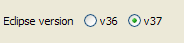
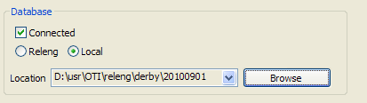
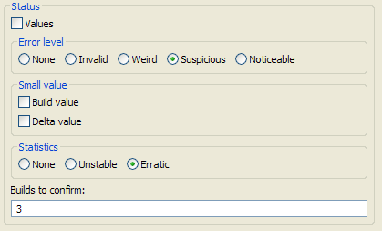
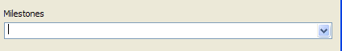
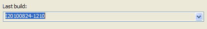
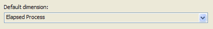
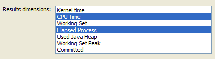

The tool have some preferences which may be configured by advanced users. This must be done carefully otherwise, either no data could be read by the tool and/or generatead results could be puzzled.

The Eclipse version on which the performance results belongs to. There are only two possible choice: the maintenance and the current versions.

By default the tool does not connect to any performance results database as common
users might not have enough rights to access it. However, users having these
rights may want to look at the database contents and update the local data files
with it. Hence, it is possible to configure the tool to connect to a database
which may be either local or on the releng server (minsky).
Note that the folder for the local database must be the parent of the
perfDb3x folder otherwise you'll get an error message.

The status preferences can be set to exclude some tests while written the status file (see Write status).
Flying over each check-box or radio buttons gives a short explanation of each preference value
Here are the detailed explanation of these status preferences:

These are the list of the version milestones. Each milestone is a date string using the yyyymmddHHMM format. When a new milestone is shipped, then a new date must be added to this preference to let the tool to identify it in the builds list and emphasize it...

The last build on which verifications and/or generation want to be done. When not set (which is the default value) the last build of the database is taken into account.
All builds after the selected one are ignored by the tool likewise they would have no local data. Changing this value will trigger the initialization of the local data which will be read again.

This is the dimension used to compute delta and make the verification. Currently this is the Elapsed Process Time dimension.
Note that the default dimension must belong to the Results dimensions described below, hence a new selected dimensions will always be automatically added to the list...

These are dimensions displayed in the scenario data HTML pages. Currently there are the Elapsed Process Time and the CPU Time. Having these dimensions configurable may be interesting to display others dimensions and see whether their numbers may be relevant or not (e.g. Used Hava Heap).
Note that the default dimension described above must belong to the selected dimensions, hence it will always be automatically added to the new selected list...